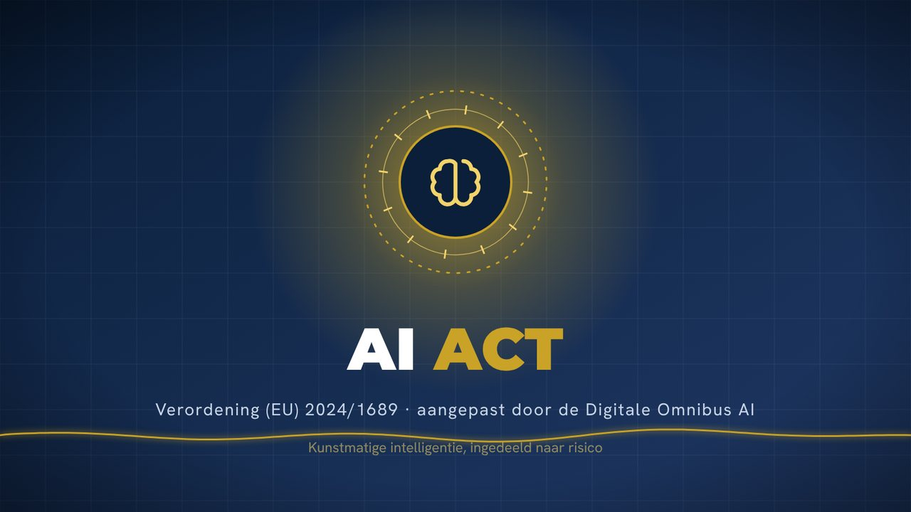

ARG
ARGARGOS › Regelgeving in 4 minuten › AI-verordening
AI-verordening in 4 minuten: België: rechtstreeks van toepassing, wet ontbreekt
De AI-verordening, aangepast door de Digitale Omnibus, deelt kunstmatige intelligentie in naar risico. De indeling bepaalt alles. Naar doel, niet naar techniek. In België geldt de verordening rechtstreeks, maar de wet ontbreekt.

- 0:00Onzichtbare beslissingen
- 0:12De boetes
- 0:27Nationaal
- 0:53AI Act
- 1:06Vier niveaus
- 1:28Hoog risico
- 1:47Data
- 2:12Europa
- 2:28Toezicht
- 2:46Wat te doen
Kerngegevens
- 35 mln. € of 7 % van de wereldwijde omzet
- 2.8.2026 algemene toepassing en transparantie
- 2.12.2026 einde overgangstermijn voor markering
- 2.12.2027 hoog risico uit bijlage III
- 2.8.2028 AI in gereguleerde producten (bijlage I)
- BIPT Aangekondigde autoriteit
- Wet ontbreekt Aanwijzing en sancties
- GBA Treedt al op via de AVG
Transcriptie
Volledige tekst van de voice-over
0:00 · Onzichtbare beslissingen
Een algoritme wijst je cv af. Een ander beslist over je lening. Een ander herkent je gezicht op het vliegveld. Niemand legde het je uit. Voortaan moet iemand dat doen.
0:12 · De boetes
De Europese AI-verordening kent boetes tot vijfendertig miljoen euro, of zeven procent van de wereldwijde omzet. Sinds augustus 2026: AI melden en mensen opleiden. Elk land regelt zijn eigen toezicht.
0:27 · Nationaal
In België geldt de verordening rechtstreeks, maar de wet ontbreekt. De regering kondigde het BIPT aan als hoofdautoriteit. De wet die het aanwijst en de sancties regelt, is er nog niet. De GBA kan al optreden via de AVG. Cao 39 verplicht informatie en overleg over nieuwe technologieën. En wie het doel van een systeem wijzigt, wordt zelf aanbieder.
0:53 · AI Act
De AI-verordening, aangepast door de Digitale Omnibus, deelt kunstmatige intelligentie in naar risico. De indeling bepaalt alles. Naar doel, niet naar techniek.
1:06 · Vier niveaus
Vier niveaus. Onaanvaardbaar: verboden, zoals sociale scoring. Hoog risico: werk, krediet, onderwijs, biometrie. Transparantie: AI melden en synthetische inhoud markeren. En minimaal risico, het meeste gebruik in bedrijven. Voor iedereen geldt de plicht tot AI-geletterdheid.
1:28 · Hoog risico
Hoog risico vraagt een volledig beheersysteem. Risicobeheer over de hele levenscyclus. Representatieve gegevens, zonder vertekening. Technische documentatie en automatische logging. En menselijk toezicht, robuustheid en cyberbeveiliging. Artikelen 9 tot en met 15 van de verordening.
1:47 · Data
De data, na de Omnibus. 2 augustus 2026: algemene toepassing en transparantie. 2 december 2026: einde van de overgangstermijn voor markering. 2 december 2027: hoog risico uit bijlage drie. En 2 augustus 2028: AI in gereguleerde producten.
2:12 · Europa
In Europa gaat elk land in zijn eigen tempo. Duitsland heeft zijn wet van kracht. Italië ook. Denemarken was het eerste. Nederland consulteert zijn ontwerp. Frankrijk debatteert in het parlement. En Spanje, Portugal en België wachten nog.
2:28 · Toezicht
In België spelen meerdere spelers: het BIPT, aangekondigd als hoofdautoriteit. De FOD Economie coördineert. De GBA en het Controleorgaan op de politionele informatie waken over hun domein. En de nationale sancties komen met de wet.
2:46 · Wat te doen
Wat nu te doen. AI-systemen inventariseren en indelen, transparantie bieden, opleiden en de medezeggenschap betrekken. ARGOS toont het aan: logboeken, menselijk toezicht en navolgbare oordelen, met AI die lokaal draait. AI-verordening: AI stelt voor, de mens beslist.
Veelgestelde vragen
Wat is AI-verordening?
De AI-verordening, aangepast door de Digitale Omnibus, deelt kunstmatige intelligentie in naar risico. De indeling bepaalt alles. Naar doel, niet naar techniek. De Europese AI-verordening kent boetes tot vijfendertig miljoen euro, of zeven procent van de wereldwijde omzet. Sinds augustus 2026: AI melden en mensen opleiden. Elk land regelt zijn eigen toezicht.
Wat vraagt AI-verordening?
Vier niveaus. Onaanvaardbaar: verboden, zoals sociale scoring. Hoog risico: werk, krediet, onderwijs, biometrie. Transparantie: AI melden en synthetische inhoud markeren. En minimaal risico, het meeste gebruik in bedrijven. Voor iedereen geldt de plicht tot AI-geletterdheid.
Wat zijn de belangrijke data?
De data, na de Omnibus. 2 augustus 2026: algemene toepassing en transparantie. 2 december 2026: einde van de overgangstermijn voor markering. 2 december 2027: hoog risico uit bijlage drie. En 2 augustus 2028: AI in gereguleerde producten.
Wat geldt er in België?
In België geldt de verordening rechtstreeks, maar de wet ontbreekt. De regering kondigde het BIPT aan als hoofdautoriteit. De wet die het aanwijst en de sancties regelt, is er nog niet. De GBA kan al optreden via de AVG. Cao 39 verplicht informatie en overleg over nieuwe technologieën. En wie het doel van een systeem wijzigt, wordt zelf aanbieder. In België spelen meerdere spelers: het BIPT, aangekondigd als hoofdautoriteit. De FOD Economie coördineert. De GBA en het Controleorgaan op de politionele informatie waken over hun domein. En de nationale sancties komen met de wet.
Wat moet een bedrijf nu doen?
Wat nu te doen. AI-systemen inventariseren en indelen, transparantie bieden, opleiden en de medezeggenschap betrekken. ARGOS toont het aan: logboeken, menselijk toezicht en navolgbare oordelen, met AI die lokaal draait. AI-verordening: AI stelt voor, de mens beslist.
Officiële bronnen
- Verordening (EU) 2024/1689 (AI Act) (EUR-Lex)
- Verordening (EU) 2026/1744 (EUR-Lex)
- Regelgevingsfiches van Software in a Box
Ga verder met
 NIS2
NIS2NIS2 in 4 minuten: België: de goede leerling
 Data Act en DGA
Data Act en DGAData Act en DGA in 4 minuten: België: de toezichthouder bereidt zich voor
 CyFun en ISO
CyFun en ISOCyFun en ISO in 4 minuten: Bewijs is geen formulier
Stem en muziek gegenereerd met kunstmatige intelligentie (art. 50 AI-verordening). Algemene informatie, geen juridisch advies; stand van zaken november 2026, volgens de regelgevingsfiches van Software in a Box. Videoclips onder licentie van Envato.
Deze presentatie insluiten op een andere website: <iframe src="https://argos.softwareinabox.eu/nl-be/regelgeving/ai-verordening/presentacion/?embed=1" width="960" height="540" allow="autoplay; fullscreen" title="AI-verordening in 4 minuten: België: rechtstreeks van toepassing, wet ontbreekt"></iframe> met een link naar deze pagina.
Ook beschikbaar in: EspañolDeutschFrançaisFrançais (Belgique)ItalianoNederlandsPortuguêsDansk